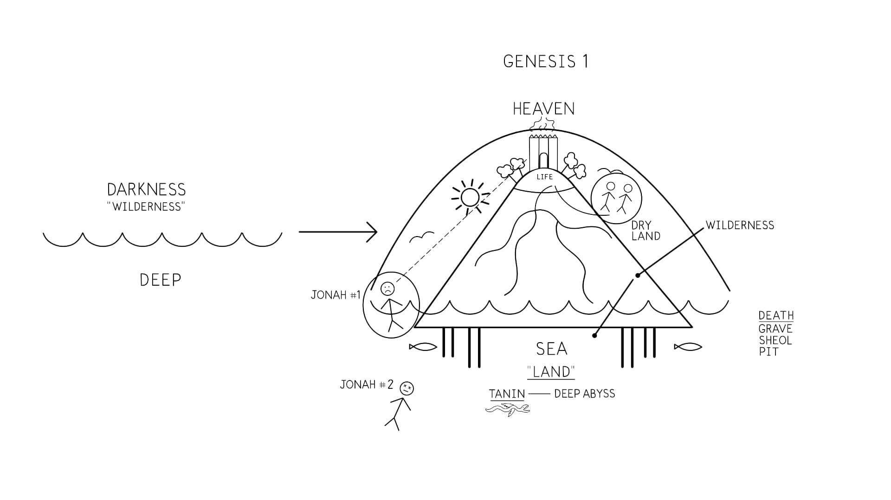
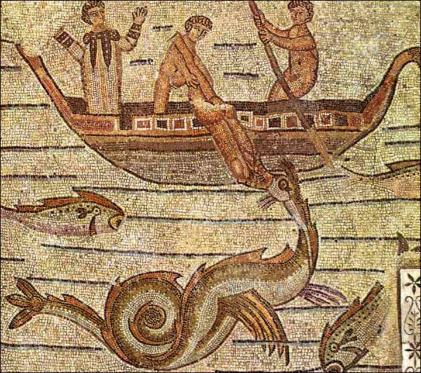
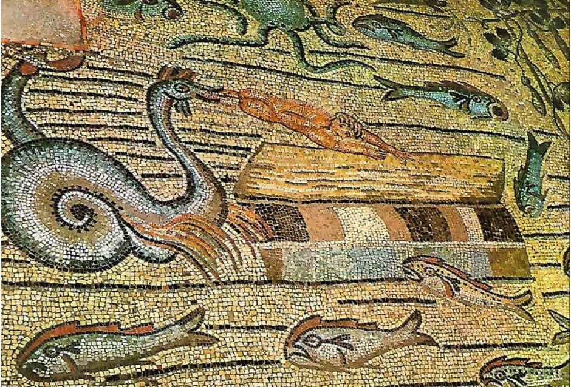
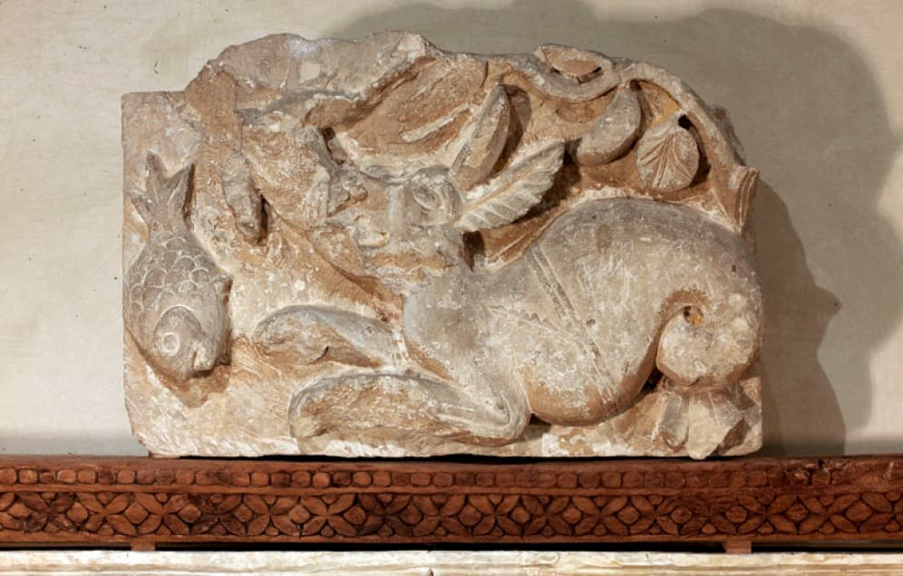
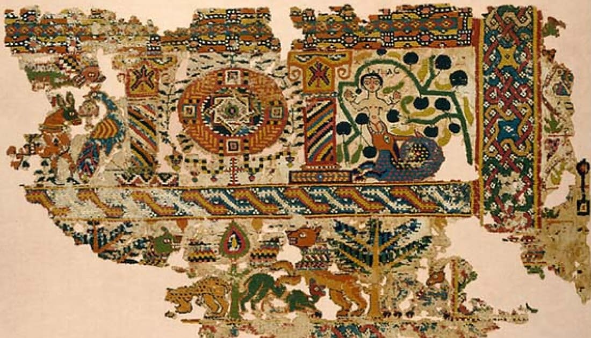
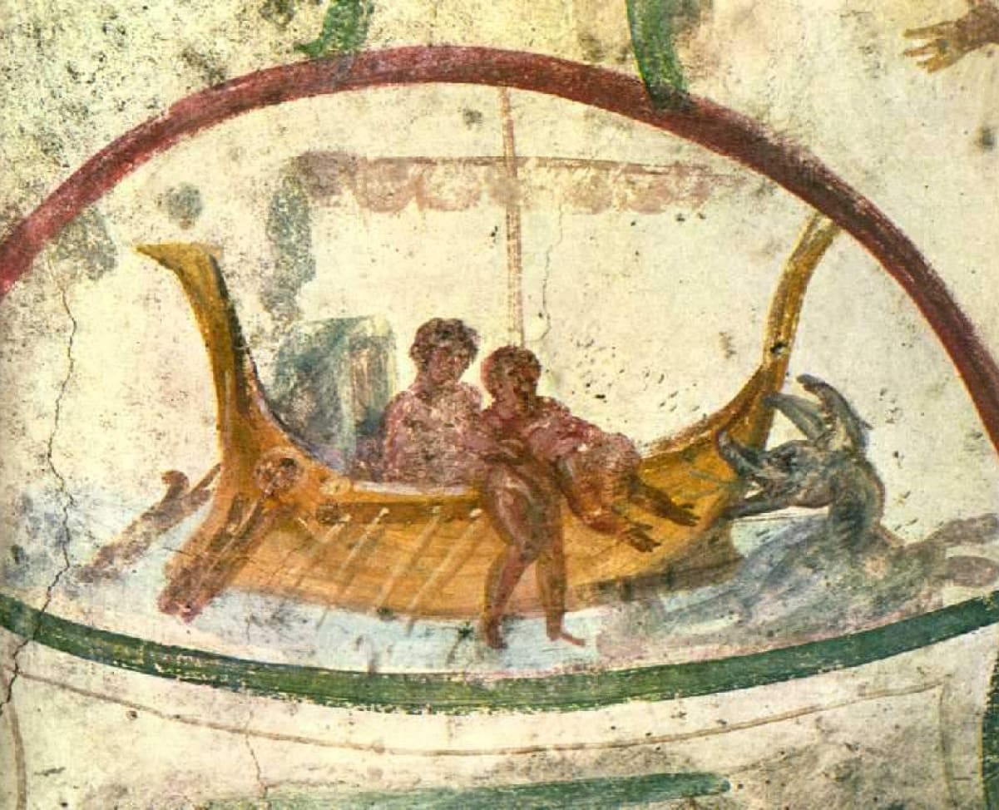

Sessão 29: O Significado do Grande PeixeSession 29: The Meaning of the Great Fish
Principais AprendizadosKey Takeaways
Na Bíblia, criaturas marinhas gigantes como a que engoliu Jonas são perigosas, mas estão totalmente sob o controle de Deus.In the Bible, giant sea creatures like the one that swallowed Jonah are dangerous, but they are totally within God's control.
O tempo de Jonas no peixe é retratado como uma espécie de morte. Mas esta passagem pela morte para a nova vida o mudará? Esta é a grande questão explorada no último capítulo de Jonas.Jonah's time in the fish is portrayed as a kind of death. But will this passage through death into new life change him? That's the big question explored in the last chapter of Jonah.
Estrutura Narrativa da Oração de JonasNarrative Structure of Jonah's Prayer
1:17a E Yahweh designou um grande peixe para engolir a Jonas, A — 1:17b e Jonas estava nas entranhas do peixe por três dias e três noites. B — 2:1 E Jonas orou a Yahweh das entranhas do peixe. 2:2-9 [A Oração de Jonas] — 2:10 E Yahweh falou ao peixe, e ele vomitou a Jonas para a terra seca. A'1:17a And Yahweh appointed a great fish to swallow Jonah, A — 1:17b and Jonah was in the inner-parts of the fish for three days and three nights. B — 2:1 And Jonah prayed to Yahweh from the inner-parts of the fish. 2:2-9 [Jonah's Prayer] — 2:10 And Yahweh spoke to the fish, and it vomited Jonah to the dry land. A'
Jonas 1:17-2:10. Tradução e Design Literário por Tim Mackie para BibleProject Classroom: Jonas (2019).Jonah 1:17-2:10. Translation and Literary Design by Tim Mackie for BibleProject Classroom: Jonah (2019).
O Grande PeixeThe Great Fish
Os autores bíblicos estavam bem conscientes de grandes e monstruosas criaturas no mar profundo. Eram consideradas divindades entre os vizinhos de Israel, mas para os autores bíblicos, eram criaturas extremamente poderosas que estavam sob o domínio de seu Criador.The biblical authors were well aware of great, monstrous creatures in the deep sea. They were considered deities among Israel's neighbors, but for the biblical authors, they were extremely powerful creatures who were under the rule of their Creator.
Grandes Criaturas Marinhas na Bíblia HebraicaGreat Sea Creatures in the Hebrew Bible
Gênesis 1 provê a fundação para entender a cosmologia antiga dos autores bíblicos. Aqui somos introduzidos à importante criatura do monstro marinho/dragão do mar (heb. tannin / תנין) e a Leviatã como criaturas marinhas.Genesis 1 provides the foundation for understanding the ancient cosmology of the biblical authors. Here we are introduced to the important creature of the sea monster/sea dragon (Heb. tannin / תנין) and Leviathan as sea creatures.
Uma Compreensão Hebraica do Cosmos em Gênesis 1. Ilustração criada por Tim Mackie para BibleProject Classroom: Jonas (2019).A Hebrew Understanding of the Cosmos in Genesis 1. Illustration created by Tim Mackie for BibleProject Classroom: Jonah (2019).
Gênesis 1:20-21 NASB — 20 "E disse Deus: 'Povoem as águas, na sua abundância, de enxames de seres viventes; e haja aves que voem sobre a terra, no firmamento dos céus.'" 21 "E Deus criou os grandes monstros marinhos (tannin) e todo o ser vivente que se move, com que as águas povoaram, conforme as suas espécies ..." Mais adiante em Gênesis 1:26, Deus incumbe suas imagens humanas de "dominarem sobre o peixe (heb. dag / גד) do mar." Assim, na sequência narrativa de Gênesis 1, os monstros marinhos estão associados ao "peixe do mar." Isto explica por que o autor de Jonas o faz ser engolido por um "grande peixe" em vez de um "grande monstro marinho." Na tradução Grega Antiga, "monstro marinho" em Gênesis 1:21 foi traduzido como κῆτος (monstro marinho), precisamente do mesmo modo que os tradutores gregos de Jonas 1:17 traduziram a frase "o grande peixe" (heb. "הדג הגדול" "o grande monstro marinho" (κήτος μεγάλος). Salmo 104:24-27 NASB* — 24 "Quão numerosas são, ó Yahweh, as tuas obras! ... 25 O mar, grande e amplo, onde há enxames sem número, animais pequenos e grandes. 26 Ali se movem os navios; o Leviatã, que formaste para nele brincar." *Palavras-chave adaptadas pelo professor. Salmo 148:7-8 NASB* — 7 "Louvai a Yahweh desde a terra, monstros marinhos [Hebraico: tannin / Grego Antigo: δράκον] e todos os abismos; 8 fogo e saraiva, neve e nuvens; vento tempestuoso, cumprindo a sua palavra." *Palavras-chave adaptadas pelo professor.Genesis 1:20-21 NASB — 20 "Then God said, 'Let the waters teem with swarms of living creatures, and let birds fly above the earth in the open expanse of the heavens.'" 21 "God created the great sea monsters (tannin) and every living creature that moves, with which the waters swarmed after their kind ..." Later in Genesis 1:26, God commissions his human images to "rule over the fish (Heb. dag / גד) of the sea." So in the narrative sequence of Genesis 1, the sea monsters are associated with the "fish of the sea." This explains why the author of Jonah has him swallowed by a "great fish" instead of a "great sea monster." In the Old Greek translation, "sea monster" in Genesis 1:21 was translated as κῆτος (sea monster), precisely the same way the Greek translators of Jonah 1:17 translated the phrase "the great fish" (Heb. "הדג הגדול" "the great sea monster" (κήτος μεγάλος). Psalm 104:24-27 NASB* — 24 "O LORD, how many are your works! ... 25 There is the sea, great and broad, in which are swarms without number, animals both small and great. 26 There the ships move along, and Leviathan, which you have formed to play in it." *Key Words Adapted by Teacher. Psalm 148:7-8 NASB* — 7 "Praise the LORD from the earth, Sea monsters [Hebrew: tannin / Old Greek: δράκον] and all the depths, 8 fire and hail, snow and clouds; stormy wind, fulfilling his word;" *Key Words Adapted by Teacher.
Os termos leviatã (heb. לויתן) e tannin foram adotados da imagística mitológica dos vizinhos de Israel para se referir a forças humanas e espirituais do mal e do caos. Os autores bíblicos adotaram esta imagística e a aplicaram à sua convicção de que Yahweh sozinho é aquele que derrota os poderes do mal e do caos.The terms leviathan (Heb. לויתן) and tannin were adopted from the mythological imagery of Israel's neighbors to refer to human and spiritual forces of evil and chaos. The biblical authors adopted this imagery and applied it to their conviction that Yahweh alone is the one who defeats the powers of evil and chaos.
Isaías 51:9-10 NASB* — 9 "Desperta, desperta, reveste-te de força, ó braço de Yahweh; desperta como nos dias antigos, as gerações de longo tempo atrás. Não foste tu que despedaçaste a Rahab, que traspassaste o monstro marinho? 10 Não foste tu que secaste o mar, as águas do grande abismo; que fizeste das profundezas do mar um caminho para os remidos passarem?" *Palavras-chave adaptadas pelo professor. Salmo 74:12-14 NASB — 12 "Todavia Deus é o meu rei desde a antiguidade, que opera livramentos no meio da terra. 13 Tu dividiste o mar com a tua força; quebraste as cabeças dos monstros marinhos nas águas. 14 esmagaste as cabeças do Leviatã ..."Isaiah 51:9-10 NASB* — 9 "Awake, awake, put on strength, O arm of the LORD; awake as in the days of old, the generations of long ago. Was it not you who cut Rahab in pieces, who pierced the sea monster? 10 Was it not you who dried up the sea, the waters of the great deep; who made the depths of the sea a pathway for the redeemed to cross over?" *Key Words Adapted by Teacher. Psalm 74:12-14 NASB — 12 "Yet God is my king from of old, who works deeds of deliverance in the midst of the earth. 13 You divided the sea by your strength; you broke the heads of the sea monsters in the waters. 14 you crushed the heads of Leviathan ..."
"O grande peixe é uma versão cômica de um pesadelo antigo, o grande monstro do profundo que representa o caos e a destruição, a inundação e o desfazimento do mundo ... Ao dar testemunho do poder do Deus de Israel, a Escritura frequentemente lida com os pesadelos da mitologia do antigo Oriente Próximo e põe as imagens a seus próprios usos ... Em Jonas o pesadelo é transformado em comédia. A criatura que engole Jonas não é um dos terríveis monstros do profundo ... mas apenas um grande e grande peixe ... Chame-o de monstro se quiseres, não é grande coisa. Onde quer que vás no mundo, o Yahweh que o criou está lá antes de ti e pode preparar um caminho para ti, ainda que o caminho seja um grande e grande peixe.""The great fish is a comic version of an ancient nightmare, the great monster of the deep that represents chaos and destruction, the flooding and undoing of the world ... In bearing witness to the power of the God of Israel, Scripture often reckons with the nightmares of ancient near eastern mythology and puts the images to its own uses ... In Jonah the nightmare is turned into comedy. The creature that swallows Jonah up is not one of the terrible monsters of the deep ... but just a great big fish ... Call it a monster if you wish, it's no big deal. Wherever you go in the world, the LORD who created it is there before you and can prepare a way for you, even if the way is a great big fish."
Há outros dois textos bíblicos que retratam os antigos inimigos de Israel como o monstro marinho, e um deles é a única outra passagem onde uma grande criatura marinha engole alguém vivo.There are two other biblical texts that depict Israel's ancient enemies as the sea monster, and one of them is the only other passage where a great sea creature swallows someone alive.
Ezequiel 29:3 NASB* — "Assim diz o Senhor Deus: 'Eis que eu estou contra ti, Faraó, rei do Egito, o grande monstro marinho que jaz no meio dos seus rios ...'" *Palavras-chave adaptadas pelo professor — Egito. Jeremias 51:34 NASB* — "Nabucodonosor, rei de Babilônia, devorou-me, esmagou-me, pôs-me como vaso vazio; engoliu-me como um monstro marinho; encheu o seu estômago das minhas iguarias; lavou-me fora." *Palavras-chave adaptadas pelo professor — Babilônia.Ezekiel 29:3 NASB* — "Thus says the Lord God, 'Behold, I am against you, Pharaoh king of Egypt, the great sea monster that lies in the midst of his rivers ...'" *Key Words Adapted by Teacher — Egypt. Jeremiah 51:34 NASB* — "Nebuchadnezzar king of Babylon has devoured me, crushed me, he has set me down as an empty vessel; he has swallowed me like a sea monster; he has filled his stomach with my delicacies; he has washed me away." *Key Words Adapted by Teacher — Babylon.
Isto se encaixa com outras instâncias na poesia bíblica de Israel sendo "engolido," que é consistentemente uma imagem de ser superado por nações inimigas.This fits with other instances in biblical poetry of Israel being "swallowed up," which is consistently an image of being overcome by enemy nations.
Salmo 124:2-5 NVI* — 2 "Se Yahweh não estivesse ao nosso lado quando os humanos nos atacaram, 3 eles nos teriam engolido vivos quando a sua ira se acendeu contra nós; 4 a inundação nos teria tragado, a correnteza nos teria varrido; 5 as águas arrogantes nos teriam levado." *Palavras-chave adaptadas pelo professor — Ver Êxodo 18:11. Lamentações 2:16 NASB — "Todos os teus inimigos abriram a sua boca contra ti; assobiam e rangem os dentes; dizem: 'Nós a engolimos!'" Oséias 8:8 NASB — "Israel é engolido; agora está entre as nações como um vaso de que ninguém se agrada." — Ver também Salmo 35:25 e Isaías 49:19.Psalm 124:2-5 NIV* — 2 "If the LORD had not been on our side when humans attacked us, 3 they would have swallowed us alive when their anger flared against us; 4 the flood would have engulfed us, the torrent would have swept over us, 5 the arrogant waters would have swept us away." *Key Words Adapted by Teacher — See Exodus 18:11. Lamentations 2:16 NASB — "All your enemies have opened their mouths wide against you; they hiss and gnash their teeth; they say, 'We have swallowed her up!'" Hosea 8:8 NASB — "Israel is swallowed up; they are now among the nations like a vessel in which no one delights." — See also Psalm 35:25 and Isaiah 49:19.
A história de Jonas reuniu todas estas imagens do Egito e Babilônia como grandes monstros marinhos engolindo o povo de Deus para o exílio e a escravidão. Mas o poder de Deus pode proteger seu povo apesar de sua "morte submarina" de modo que um povo recriado possa emergir do outro lado (como em Ez 37).The story of Jonah has drawn together all of these images of Egypt and Babylon as great sea monsters swallowing God's people into exile and slavery. But God's power can protect his people despite their "submarine death" so that a re-created people can emerge out the other side (as in Ezek. 37).
"Os leitores originais de Jonas teriam visto estas conexões imediatamente: há muito tempo Israel passou em segurança através do mar no seu êxodo do Egito, e mais recentemente Israel foi engolido pela maior das bestas, Babilônia, a grande, a qual o profeta Jeremias chama de 'o grande monstro que me engoliu' (Jr 51:34) ... E todavia, depois de ser engolido por Babilônia, o remanescente de Israel foi mantido a salvo no ventre de Babilônia (ver as histórias de Daniel ou Jeremias 29). Jonas engolido por um monstro marinho é uma imagem paralela ao povo judeu indo para o exílio, ainda assim vivo e ainda tendo um futuro enquanto cantam canções no ventre da besta ...""The original readers of Jonah would have seen these connections right away: long ago Israel passed safely through the sea in their exodus from Egypt, and more recently Israel was swallowed up by the greatest beast of them all, Babylon the great, which the prophet Jeremiah calls 'the great monster that has swallowed me up' (Jer 51:34) ... And yet, after being swallowed up by Babylon, the remnant of Israel was kept safe in the belly of Babylon (see the stories of Daniel or Jeremiah 29). Jonah swallowed up by a sea monster is a parallel image to the Jewish people going into exile, yet still alive and still having a future as they sings songs in the belly of the beast ..."
Adaptado de Cary, Phillip (2008), Jonah. Brazos Press. 76-77.Adapted from Cary, Phillip (2008), Jonah. Brazos Press. 76-77.
Primeiras Obras de Arte do Grande Peixe de JonasEarly Artwork of Jonah's Great Fish
Mosaicos do século IV d.C., Basílica Patriarcal em Aquileia, Itália. Agricola, Peter (2009). Jonas e o monstro marinho (Ketos). Flickr.Mosaics from fourth century C.E., Basilica Patriarchale in Aquileia, Italy. Agricola, Peter (2009). Jonah and the sea-monster (Ketos). Flickr.
HEN-Magonza (2021). Aquileia, Basílica, mosaico de piso, Jonas lançado na praia. Flickr.HEN-Magonza (2021). Aquileia, Basilica, floor mosaic, Jonah thrown on the beach. Flickr.
Lintel esculpido em pedra do século VI e tapeçaria copta do século IV do Mosteiro de Bawit no Alto Egito (Louvre, Paris). Korshi (2019). Desconhecido. CopticMagicalPapyri.Sixth century stone-carved door lintel and fourth century Coptic tapestry from Monastery of Bawit in Upper Egypt (Louvre, Paris). Korshi (2019). Unknown. CopticMagicalPapyri.
Da catacumba de Santa Priscila, Roma (séc. II-IV d.C.). Leinad, Creative Commons (2006). Jonas lançado ao Mar. Wikimedia.From the catacomb of St. Priscilla, Rome (2nd-4th century C.E.). Leinad, Creative Commons (2006). Jonah thrown into the Sea. Wikimedia.
Pergunta de ReflexãoReflection Question






Que tipos de coisas o autor quer que entendamos quando lemos que Jonas é engolido por um peixe? Quais são as ideias bíblicas relacionadas a grandes criaturas marinhas que o autor está pressupondo que nós sabemos?What kinds of things does the author want us to understand when we read that Jonah is swallowed by a fish? What are the biblical ideas related to large sea creatures that the author is assuming we know?